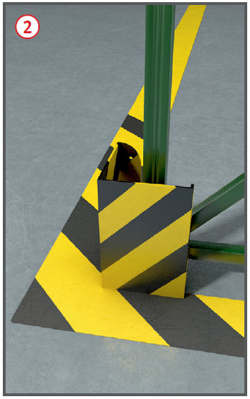
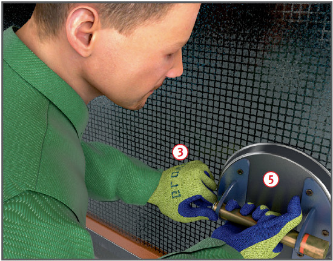
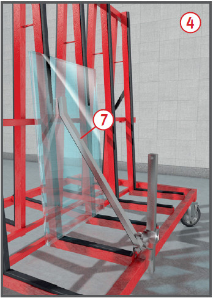

Es bestehen die Gefahren von
Quetschungen und Schnittverletzungen
durch Glasscheiben,
sowie von umkippenden Teilen
getroffen zu werden.
Schutzmaßnahmen
Glasscheiben so lagern, dass
sie nicht umfallen, kippen, verrutschen
oder brechen können .
Glaslager, Regale u. Ä. gegen
Anprall von Fahrzeugen und
Lasten schützen .
Zulässige Belastung beachten.

Zusätzliche Hinweise
für die Glaslagerung auf
der Baustelle
Glasscheiben auf tragfähigem
und ebenem Untergrund und
außerhalb von Verkehrswegen
lagern.
Sicherheitsabstand von 0,50 m
gegenüber kraftbewegten Teilen
der Umgebung, z. B. von Kranen,
einhalten.
Gerüste für die Aufnahme von
Glaslasten überprüfen. Lastklasse des Gerüstes beachten.
Zusätzliche Hinweise
für den Transport von Hand
Beim manuellen Transport Verwendung von:
griffigen, schnitthemmenden
Handschuhen ,
Fußschutz.
Beim Kanten der Scheiben
untere Ecken gegen Beschädigungen
schützen, z. B. durch
Eckschuh oder Hartgummimatte.
Tragegurte
Handtragegurte nur für
kurzzeitiges Anheben von Glasscheiben verwenden.
Möglichst Kreuzgurte benutzen.
Gegenüber den Schultergurten bewirken sie eine gleichmäßigere
axiale Belastung.
Gurte vor jedem Einsatz auf
Beschädigungen kontrollieren.
Transportwagen
Scheiben gegen Umfallen sichern .
Beim Abstellen des Transportwagens die Rollen festsetzen.
Handsaugheber
Vor Verwendung von Handsaughebern Tragfähigkeit kontrollieren.
Möglichst nur Handsaugheber
mit einer Vakuumkontrolle verwenden.
Gummi der Hebersaugscheiben ständig auf Beschädigungen hin überprüfen und ggfs. auswechseln.
Die Gummiflächen stets nach
Herstellerangaben reinigen.
Die Scheibe muss an der
Ansaugstelle sauber und trocken sein.
Handsaugheber möglichst nur
bei kurzfristigen Arbeiten einsetzen,
z. B. beim Einheben und
Positionieren.


Zusätzliche Hinweise für den Transport mit Hebezeugen bei Montagearbeiten
Beim Transport von Glasscheiben und -elementen nur
Lastaufnahmemittel mit formschlüssigen
Halteeinrichtungen
verwenden. Ist dies nicht möglich,
Vakuumheber mit einer
zusätzlichen formschlüssigen
Halteeinrichtung oder mit einem
zweifachen Reservevakuum einschließlich
Rückschlagventil
verwenden . Jedes Reservevakuum muss mit einem getrennten
Satz von Vakuumtellern
verbunden sein. Jeder dieser
Sätze muss mindestens die
zweifache Tragfähigkeit besitzen.
Formschlüssige Halteeinrichtungen
gelten nur dann als ausreichende
Sicherung, wenn sie
erst gelöst werden, wenn die
Last durch Abstellen bei der
Zwischenlagerung oder durch
die endgültige Befestigung am
Bauwerk gegen Umstürzen oder
Absturz gesichert ist.